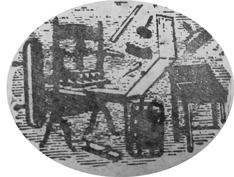
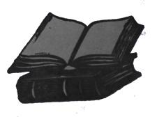
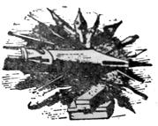
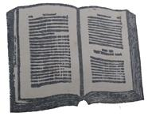
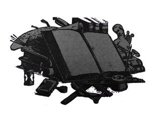
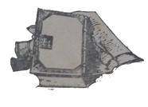

La literatura se demuestra con los libros, que son su movimiento. Una pasada encuesta de
"Lunes" ("¿Qué libros salvaría usted?", "Lunes", número 66) servía, quizás, para medir la erudición
— o su ausencia — entre los interrogados. También sirvió para otras cosas, todas enumerables:
- Había quien mostraba preferencia por la preferencia
- Hubo quien encontró importante la importancia
- Hubo caprichos, hábitos, amores decisivos
- Muchos libros mencionados — "Michel Kolnas", por ejemplo — se agotaron en las librerías
- Hubo gente molesta.
Esta vez esta encuesta tal vez será más útil. Servirá a los estudiantes para comprobar sus
conocimientos en la literatura de su país. Los recién alfabetizados podrán encontrar diez libros
útiles, amenos o importantes que leer además de los ejercicios
habituales. Los autores cubanos se verán reconocidos por aquellos a quienes a menudo ve como los
negadores de su obra: los autores cubanos. Finalmente, se podrá decir desde ahora que existe una
literatura cubana, no sólo porque hay diez libros dónde escoger, sino porque podría también haber
veinte, treinta, etcétera.
Los iniciadores de esta moda — los franceses, a principio de siglo —
aclararon, muy a tiempo, que estas encuestas servían también... para nada.
"Lunes" da las gracias a todos los interrogados. A los que
respondieron las da dobles.
Hace 30 años preguntó Félix Lizaso, desde la Revista Cervantes, cuáles eran los diez mejores libros cubanos. Se
me hizo el honor de incluirme entre los consultados. Ahora
me lo hacen los jóvenes escritores de LUNES DE REVOLUCION. La misma pregunta, separada por seis lustros,
pone a prueba la firmeza de mis criterios y el acierto de la selección.
Una cosa que dije entonces ha de ser sostenida hoy.
Afirmé que Cuba es tierra de escritores, no de libros, Con
lo que quise decir, y reitero ahora, que hemos contado desde que tenemos conciencia de nación con cultura
y sensibilidad singulares derramadas en el articulo, el ensayo, el poema y el discurso, más que en el libro. Sigo creyendo,
como hace treinta años, que tuvo razón Pedro Henríquez Ureña al afirmar que el ideal de justicia está sobre el ideal
de cultura, por lo que no hay que lamentar demasiado el
caso. Lo cierto es que una pupila extranjera nos juzgaría
mal a través del conocimiento de diez libros seleccionados
como los mejores. Detrás de la lista infiel, quedaría un
mundo de pensamiento y de sensibilidad que no puede penetrarse sino por el que estudie nuestro camino de pueblo
y la calidad de sus hombres letrados.
En Abril de 1932 hice la selección siguiente:
- Un volumen de lo que luzca en Martí, con sus dotes inigualadas de escritor, su estatura humana.
- Un libro con los mejores poemas de José María Heredia.
- Un tomo con lo mejor de la Avellaneda, prefiriendo su obra dramática, lo más eminente sin duda en nues-
tra producción teatral.
- Un volumen con poemas de Luaces, Milanés, Plácido, Zenea y Casal, como líricos de valor permanente, re-
presentativos, además, de momentos culminantes en nues-
tro proceso literario.
- Una selección de los más agudos estudios políticos de José Antonio Saco.
- Cecilia Valdés, como nuestra mejor novela y porque muestra, además, las entrañas de nuestra vida colonial
española.
- José de la Luz y Caballero, por Manuel Sanguily, porque entrega la vida de un hombre arquetípico que, como Varela, es superior a su obra escrita.
- El Romanticismo en España, de Enrique Piñeyro,como modelo de ensayo crítico.
- Una compilación de los mejores ensayos de Varona sobre problemas cubanos.
- Azúcar y Población en las Antillas, como libro en que, aun resolviéndose desacertadamente nuestro problema colonial, se explana con técnica magistral la realidad económica de Cuba.
A tanta distancia de tiempo, cambiaría calificativos,
pero haría limitadas correcciones a mi escogimiento. Incluiría al Padre -Varela, por la fuerza de su pensamiento
progresista, aunque no sea expositor sugestivo. Añadiría las mejores páginas de Justo de Lara y retiraría del número 4 los nombres de Luaces y Milanés.
Una pregunta surgirá de inmediato: ¿y en 30 años no se
ha publicado en Cuba libro que "desbanque" a alguno de
los insertos en la comprometida selección? Desde luego que
si, y bastaría mentar a cuentistas y poetas de estatura histórica. Pero, de entrar en nuestra producción contemporánea,
se hubiera impuesto un dilatado estudio para explicar
preferencias y relieves y, cosa más grave, nuestros más considerables creadores — en lo que va de República —, están
vivos y produciendo. No quiere decir esto que temamos enjuiciar a nuestro vecino: hacerlo con justicia requeriría una
meditación y un espacio que no me agradecerían ni los
jóvenes que hacen LUNES DE REVOLUCION, ni sus lectores.
4 de Octubre, 61.
LUIS AGÜERO
Esta encuesta, como todas las encuestas. resulto un
tanto arbitraria. Es lógico entonces que la selección sea un
tanto arbitraria también.
Yo he escogido los diez libros cubanos que más me
gustan (creo que así debió hacerse la 'pregunta: "¿Cuáles
son los diez libros cubanos que más le interesan ?"). No me
ha llevado mucho tiempo confeccionarla: uno siempre tiene
presente los libros que salvaría en caso de "que entrara
la polilla en su biblioteca". A mí me interesan, particularmente, el cuento y la novela. He aquí mi selección:
- Obras Completas. — José Marti.
- Cecilia Valdés. — Cirilo Villaverde.
- Mi Tío el Empleado. — Ramón Meza.
- El Acoso. — Alejo Carpentier.
- Cuentos Fríos. — Virgilio Piñera.
- El Otro Cayo. — Lino Novas Calvo.
- Así en la Paz Como en la Guerra. — Guillermo Cabrera Infante.
- Obra Poética. — Emilio Ballagas.
- La Paloma de Vuelo Popular. — Nicolás Guillén.
- La Seiba. — Oscar Hurtado.
JOSÉ ARDEVOL
- Obras Completas. — José Martí.
- El Son Entero. — Nicolás Guillén.
- Contrapunteo Cubano del Tabaco y el Azúcar. — Fernando Ortiz.
- Historia de la Esclavitud. — J. A. Saco.
- La Música en Cuba. — Alejo Carpentier.
- Cuba y su Evolución Colonial. — Francisco, Figueras.
- Cuba no Debe su Independencia a los E.U. — E. Roig de Leuchsenring.
- Guatemala Nuestra. — Juan Marinello.
- Pluma en Ristre. — Pablo de la Tórnente Brau.
- Geografía de Cuba. — A. Núñez Jiménez.
HUMBERTO ARENAL
- Obras Completas. — José Martí.
- Cecilia Valdés. — Cirilo Villaverde.
- La Luna Nona. — Lino Novas Calvo.
- Las Impuras. — Miguel de Carrión.
- Aire Frío. — Virgilio Pinera.
- La Sangre Hambrienta. — Enrique Labrador Ruiz.
- Hombres Sin Mujer. — Carlos Montenegro.
- La Seiba. — Oscar Hurtado.
- El Reino de Este Mundo. — Alejo Carpentier.
ANTON ARRUFAT
- Mi Tío el Empleado. — Ramón Meza.
- Excursión a Vueltabajo. — Cirilo Villaverde.
- El Negrero. — Lino Novas Calvo.
- Hombres Sin Mujer. — Carlos Montenegro.
- Enemigo Rumor. — José Lezama Lima.
- Cuentos Fríos. — Virgilio Piñera.
- Sabor Eterno. — Emilio Ballagas.
- Historia de una Pelea Cubana Contra los Demonios. — Fernando Ortiz.
- La Guerra del Tiempo. — Alejo Carpentier.
- Cantos de la Tarde. — Juan Clemente Zenea.


ROSARIO ANTUÑA
- Diarios. Versos Libres. Discursos políticos. — José Martí.
- Elegía a Jesús Menéndez. — Nicolás Guillén.
- En la Calzada de Jesús del Monte. — Elíseo Diego.
- Diario de Campaña. — Máximo Gómez.
- Discursos y conferencias. — Manuel Sanguily.
- Cartas a Elpidio. — Félix Varela.
- El Monte. — Lydia Cabrera.
- Los Bailes y el Teatro de los Negros en el Folklore de Cuba. — Fernando Ortiz.
- Poetas Famosos del Siglo XIX. — Enrique Piñeyro
- La Poesía Contemporánea en Cuba. — Roberto Fernández Retamar.
GUILLERMO CABRERA INFANTE
- Diario. — José Marti.
- Las Impuras. — Miguel de Carrión.
- Hombres sin Mujer. — Carlos Montenegro.
- El Monte.— Lydia Cabrera.
- La Luna Nona. — Lino Novas Calvo.
- La Sangre Hambrienta. — Enrique Labrador Ruiz.
- Cuentos Fríos. — Virgilio Piñera.
- El Acoso. — Alejo Carpentier.
- El Cuentero. — Onelio Jorge Cardoso.
- Cuentos Populares Cubanos. — Samuel Feijóo.
WALTERIO CARBONELL
- Obras Completas. — José Martí.
- Discursos. — Fidel Castro.
- Cuba no Debe su Independencia a los Estados Unidos. — Roig de Leuchsenring.
- El Son Entero. — Nicolás Guillén.
- La Búsqueda. — Jaime Sarusky.
- Los Instrumentos de la Música Afro-Cubana. — Fernando Ortiz.
- Así en la Paz como en la Guerra. — Guillermo Cabrera Infante.
- Azúcar y Población. — Ramiro Guerra.
- Cecilia Valdés. — Cirilo Villaverde.
- Azúcar y Abolición. — Cepero Bonilla.
ALEJO CARPENTIER
- Obras Completas. — José Martí.
- Sóngoro Cosongo. — Nicolás Guillén.
- Las Impuras. — Miguel de Carrión.
- Cecilia Valdés. — Cirilo Villaverde.
- Mi Tío el Empleado. — Ramón Meza.
- Los Bailes y el Teatro de los Negros en el Folklore de Cuba. — Fernando Ortiz.
- La Expresión Americana. — Lezama Lima.
- Decimistas Cubanos. — Samuel Feijóo.
- Cuentos Negros de Cuba. — Lydia Cabrera.
- La Calzada de Jesús del Monte. — Elíseo Diego.
- Poesías Completas. — Heredia.
EDMUNDO DESNOES
- Ensayo Político Sobre la Isla de Cuba. — Alejandro de Humboldt.
- Cartas a Lipidio. — Félix Varela.
- Francisco. — Anselmo Sánchez y Romero.
- Guerra de los Diez Año. — Ramiro Guerra y Sánchez.
- Cecilia Valdés.— Cirilo Villaverde.
- Poesías y Diario. — José Marti.
- Contrapunteo cubano del Azúcar y el Tabaco. — Fernando Orliz.
- El Monte. — Lydía Cabrera.
- West Indies Ltd. — Nicolás Guillen.
- Guerra del Tiempo. — Alejo Carpentier.
- Hombres Sin Mujer. — Carlos Montenegro.
- Aire Frío. — Virgilio Pinera.
- La Historia me Absolverá y Discurso Ante la ONU. — Fidel Castro.
MANUEL DIAZ MARTINEZ
Algunos de los libros cubanos que más me interesan:
- Obras Completas. — José Martí.
- Cecilia Valdés. — Cirilo Villaverde.
- Tradiciones Cubanas. — Alvaro de la Iglesia.
- Nosotros. — Regino Pedroso.
- La Tierra Herida. — Manuel Navarro Luna.
- West Indies Ltd. — Nicolás Guillen.
- Los Fundamentos del Socialismo en Cuba. — Blas Roca.
- Martí. — Manuel Isidro Méndez.
- Ensayos Martianos. — Juan Marinello.
- Las Crónicas. — Félix Pita Rodríguez.
- Los Valedontes. — Alcides Iznaga.
- Obras Completas. — Rolando T. Escardó.
PABLO ARMANDO FERNANDEZ
- Obras Completas. — José Marti.
- El Son Entero. — Nicolás Guillén.
- Enemigo Rumor. — José Lezama Lima.
- Obra Poética. — Emilio Ballagas.
- Cincuenta Años de Poesía Cubana. — Cintlo Vitier.
- Los Pasos Perdidos. — Alejo Carpentier.
- La Sangre Hambrienta. — Enrique Labrador Ruiz.
- Cuentos Fríos. — Virgilio Pinera.
- El Monte. — Lydia Cabrera.
- Así en la Paz Como en la Guerra. — Guillermo Cabrera Infante.
Creo que todo poeta trabaja para un solo libro. Creo
que libros como "La Calzada de Jesús del Monte" de Eliseo Diego , "La Seiba" de Oscar Hurtado , "La Búsqueda" de
Jaime Sarusky , "El Cuentero" de Onelio Jorge Cardoso y
"Los Párpados y el Polvo" de Fayad Jamis son libros de
justa importancia.


ROBERTO FERNANDEZ RETAMAR
- Poesías. — José María Heredia.
- Cecilia Valdés. — Cirilo Villaverde.
- Historia de la Esclavitud. — José Antonio Saco.
- Obras Completas. — José Martí.
- De la Colonia a la República. — Enrique José Varona.
- Contrapunteo Cubano del Tabaco y el Azúcar. — Fernando Ortiz.
- Azúcar y Población en las Antillas. — Ramiro Guerra.
- Cincuenta Años de Poesía en Cuba. — Cintio Vitier.
- Historia me Absolverá y Otros Discursos. — Fidel Castro.
- La Guerra de Guerrillas. — Ernesto Che Guevara.
La heterogeneidad de lo escogido se debe a que no se
ha precisado que se trate sólo de libros literarios, históricos, etc.: todo al parecer debe ir mezclado. Por otra parte
se habla de importancia: ¿de qué orden, estética, política,
etc.? Si se tratara sólo de obras literarias, por ejemplo, habría incluido Los pasos perdidos, de Carpentier, El son
entero, de Guillén, Enemigo rumor de Lezama , En la calzada de Jesús del Monte, de Eliseo Diego. Si se tratara sólo o
esencialmente de libros políticos, nos encontraríamos con
que muchos de nuestros mejores hombres políticos, rigurosamente hablando no tienen libros:
Rubén Martínez Villena, Julio Antonio Mella, por ejemplo.
R.F.R
ADRIAN GARCIA HERNANDEZ
- Historia de la Isla y Catedral de Cuba. — Morell de Santa Cruz.
- Contra la Anexión. — José Antonio Saco.
- Polémica Contra el Eclecticismo. — José de la Luz y Caballero.
- Obras Completas. — José Martí.
- Enemigo Rumor. — José Lezama Lima.
- West Indies Ltd. — Nicolás Guillen.
- Los Pasos Perdidos. — Alejo Carpentier.
- Azúcar y Población en las Antillas. — Ramiro Guerra.
- Pluma en Ristre. — .Pablo de la Torriente Brau.
- En la Calzada de Jesús del Monte. — Elíseo Diego.
Nota: ¿Por qué no solicitar una lista de los diez peores
libros cubanos?
OSCAR HURTADO
- Cecilia Valdés. — Cirilo Villaverde.
- Papeles Sobre Cuba. — José Antojo Saco.
- Obras Completas. — José Martí.
- Poesía. — Julián del Casal.
- Poesía. — José Lezama Lima.
- Poesía. — Nicolás Guillén.
- Los Pasos Perdidos. — Alejo Carpentier.
- EL Cuentero. — Onelio Jorge Cardoso.
- Teatro Completo. — Virgilio Piñera.
- La Historia me Absolverá. — Fidel Castro.
RINE LEAL
- Diario de Campaña. — Jóse Martí, (política).
- Teatro Completo. — Virgilio Piñera. (teatro).
- Obra Completa. — Emilio Ballagas. (poesía).
- Elegía a Jacques Roumain. — Nicolás Guillen, (poesía).
- 50 Años de Poesía Cubana. — Antología. Cintio Vitier, (poesía).
- Así en la Guerra Como en la Paz. — Guillermo Cabrera Infante, (cuento).
Vayan por delante dos aclaraciones necesarias: 1) He
escogido no los mejores libros cubanos , sino los que más me
han impresionado por una u otra razón especial, y 2) La selección se limitará simplemente a 6 volúmenes y no los diez
demandados. Mi escaso conocimiento de nuestra literatura,
me impide escoger donde no conozco y no quiero citar libros
por su título o las opiniones de otros
JOSE LEZAMA LIMA
- Papeles Sobre Cuba. — José A. Saco.
- Obras Completas. — José Martí.
- Poesías Completas. — Julián del Casal.
- Historia de Cuba. — Ramiro Guerra.
- Los Pasos Perdidos. — Alejo Carpentier.
- La Sangre Hambrienta. — E. Labrador Ruiz.
- Poema Mío. — Eugenio Florit.
- El Monte. — Lydia Cabrera.
- Lo Cubano en la Poesía. — Cintio Vilier.
Me demoraría mucho en escoger entre: En la Calzada
de Jesús del Monte, de Elíseo Diego; Las Miradas Perdidas, de Fina García Marruz; Espirales del Cuje, de Lorenzo
Garría Vega; Electra Garrigó, de Virgilio Pinera .
MARIANO
- Enemigo Rumor. — José Lezama Lima.
- Cuentos Fríos. — Virgilio Piñera.
- El Son Entero. — Nicolás Guillen.
- Los Pasos Perdidos. — Alejo Carpentier.
- Mi Tío el Empleado. — Ramón Meza.
- Contrapunteo, del Tabaco y del Azúcar. — Fernando Ortiz.
- Diez Poetas Cubanos. — Cintio Vitier.
- La Sangre Hambrienta. — Enrique Labrador Ruiz.
- El Habanero. — Félix Varela.
- Poesías Completas. — Julián del Casal.

A. MARTINEZ HERRERA
- Las Impuras. — Miguel de Carrión.
- Cecilia Valdés. — Cirilo Villaverde.
- Obras Completas. — José Martí.
- El Son Entero. — Nicolás Guillen.
- Los Pasos Perdidos. — Alejo Carpentier.
- La Sangre Hambrienta. — Enrique Labrador Ruiz.
- Tobías. — Félix Pita Rodríguez.
- Aire Frío. — Virgilio Piñera.
- Así en la Paz Como en la Guerra. — Guillermo Cabrera Infante.
- La Búsqueda. — Jaime Saruski.
JULIO MATAS
- Versos Sencillos. — José Martí.
- Sabor Eterno. — Emilio Ballagas.
- En la Calzada de Jesús del Monte. — Eliseo Diego.
- Cuentos Fríos. — Virgilio Pinera.
- Aire Frío. — Virgilio Piñera.
- El acoso. — Alejo Carpentier.
- La Seiba. — Oscar Hurtado.
- Enemigo Rumor. — José Lezama Lima.
- La Carne de René. — Virgilio Pinera.
- El Hoyo. — Humberto Rodríguez Tornee.
PEDRO DE ORAA
- Diarios. — José Martí.
- Obra General. — Enrique José Varona.
- Versos Precursores. — José Manuel Poveda.
- Obra Poética. — Regino E. Boti.
- Hombres sin Mujer. — Carlos Montenegro.
- Porqué. — Lydia Cabrera.
- El Son Entero. — Nicolás Guillen.
- Historia de una Pelea Cubanana Contra los Demonios.— Fernando Ortiz.
- La Fijeza y Analecta del Reloj. — José Lezama Lima.
- En la Calzada de Jesús del Monte. — Eliseo Diego.
HEBERTO PADILLA
- Obras Completas. — José Martí.
- Cecilia Valdés. — Cirilo Villaverde.
- Azúcar y Población en las Antillas. — Ramiro Guerra.
- Contrapunteo Cubano del Azúcar y el Tabaco. — Fernando Ortiz.
- Las Impuras.— Miguel de Carrión.
- Las Pasos Perdidos. — Alejo Carpentier.
- Tobías. — Félix Pita Rodríguez.
- El Son Entero. — Nicolás Guillén. (Suma poética).
- Ensayos Martianos. — Juan Marinello.
- En la Calzada de Jesús del Monte. — Eliseo Diego.
- La Sangre Hambrienta. — Enrique Labrador Ruiz.
- Aire Frío. — Virgilio Piñera.
- Cincuenta Anos de Poesía Cubana. — Cintio Vitier.
Y los primeros libros de autores de mi generación cuyas
indudables calidades seguramente serán advertidas mucho mejor
cuando alcancen perspectiva histórica: "Toda la
Poesíá", Pablo A. Fernández; "El Barranco", Nivaria Tejera;
"Así en la Paz como en la Guerra", Guillermo Cabrera
Infante; "Los Párpados y el Polvo", Fayad Jamis; "La
Búsqueda", Jaime' Sarushi; "El Libro de Rolando", Rolando Escardó .
FELIX PITA RODRIGUEZ
- Obras Completas. — José Marti.
- Cecilia Valdés. — Cirilo Villaverde.
- Crónicas de la Guerra. — Miró Argenter.
- Obras Completas. — Manuel de la Cruz.
- Artículos de Costumbres. — José Victoriano Betancourt.
- Ensayos Martianos. — Juan Marinello.
- Los Fundamentos del Socialismo en Cuba. — Blas Roca.
- Antología Poética. — Nicolás Guillén.
- 50 Años de Poesía en Cuba. — Cintio Vitier.
- Antología del Cuento Cubano. — Salvador Bueno.
- Geografía de Cuba. — Antonio Núñez Jiménez.
- Lecciones de Historia de Cuba. — Sergio Aguirre.
VIRGILIO PIÑERA
Después de pensarlo mucho me pareció justo que mi
selección de diez o veinte libros cubanos valiosos la efectuara de acuerdo con su importancia histórica.
Descontando el gusto personal no puede eludirse la contingencia
histórica. A mi modo de ver los libros (o simplemente una
obra) que aparecen en mi selección han marcado un
momento en nuestras letras. Desconocerlos seria desconocer
o falsear la literatura y la historia de Cuba. Por otra parte,
mi selección se limita a los escritores cubanos del presente
siglo; los del XIX no necesitan ni aclaraciones ni
encasillamientos. Por último, mi selección no implica
necesariamente que todos estos libros sean los libros que yo preferiría.
Esta interrogación abierta la dejo en manos del lector, que él conteste por mí.
En la novela:
- Hombres sin Mujer. — Carlos Montenegro.
- Los Pasos Perdidos. — Alejo Carpentier.
En el cuento:
- La Luna Nona y Otros Cuentos.— Lino Novas Calvo.
- Así en la Paz Como en la Guerra. — Guillermo Cabrera Infante
En la historia:
- Contrapunteo Criollo del Tabaco y del Azúcar. — Fernando Ortiz
- La Historia me Absolverá. — Fidel Castro.
En la poesía:
- Sóngoro Cosongo.— Nicolás Guillen.
- Sabor Eterno. — Emilio Ballagas.
- Enemigo Rumor. — José Lezama Lima.
- Poesía, Revolución del Ser. — José A. Raragano.
- Libro de Rolando. — Rolando T. Escardó.
En el teatro:
- Tembladera. — José Antonio Ramos.
- Medea en el Espejo. — José Triana.
- El Robo de! Cochino.— Abelardo Estorino.
JESUS SABOURIN
- Poesía. — José María Heredia.
- Papeles Sobre Cuba. — José Antonio Saco.
- Cecilia Valdés. — Cirilo Villaverde.
- La Edad de Oro. — José Marti.
- Los Negros Brujos. — Fernando Ortiz.
- Versos Precursores. — José Manuel Poveda.
- La Pupila insomne. — Martínez Villena.
- Marcos Antilla. — Luis Felipe Rodríguez.
- El Son Entero. — Nicolás Guillén.
- Poema Mío. — Eugenio Florit.
LUIS SUARDIAZ
- Obras Completas. — José Martí.
- Cecilia Valdés. — Cirilo Villaverde.
- Versos Precursores. — José Manuel Poveda.
- La Zafra. — Agustín Acosta.
- Sóngoro Cosongo. — Nicolás Guillén.
- La Sangre Hambrienta. — Enrique Labrador Ruiz.
- Diario Abierto. — Samuel Feijóo.
- El Cuentero. — Onelio Jorge Cardoso.
- Obras Completas. — Emilio Ballagas.
- En la Calzada de Jesús del Monte. — Eliseo Diego.
"...estos libros — breves unos, extensos otros — han
señalado caminos, formas, épocas, situaciones..."
NIVARIA TEJERA
- Mi Tío el Empleado. — Ramón Meza.
- Cecilia Valdés. — Cirilo Villaverde.
- Obras Completas. — José Martí.
- Las Impuras. — Miguel de Carrión.
- Antología de la Poesía Cubana. — Clntio Vltier.
- Analecta del Reloj. — José Lezama Lima.
- El Son Entero. — Nicolás Guillén.
- Ensayos Martianos. — Juan Marinello.
- Cuentos Fríos. — Virgilio Piñera.
- Los Pasos Perdidos. — Alejo Carpentier.
JOSE TRIANA
- Enemigo Rumor. — José Lezama Lima.
- Mi Tío el Empleado. — Ramón Meza.
- Asi en la Paz como en la Guerra. — Guillermo Cabrera Infante.
- Escenas Norteamericanas. — José Martí.
- La Seiba. — Oscar Hurtado.
- Cuentos Fríos. — Virgilio Piñera.
- Libro de Rolando. — Rolando Escardó.
- La Búsqueda. — Jaime Sarusky.
- Hombres sin Mujer. — Carlos Montenegro.
- Toda la Poesía. — Pablo Armando Fernández.
ROSA HILDA ZELL
- El Pichardo Novísimo y la Edición de Cecilia Valdés
de Villaverde anotados por este autor. — Esteban Rodríguez Herrera.
- El Cuentero. — Onelio Jorge Cardoso.
- Una de Cal y otra de Arena. — Gregorio Ortega.
- La Pupila Insomne. — Rubén Martínez Villena.
- Geografía de Cuba. — Antonio Núñez Jiménez,
- Los Trovadores del Pueblo y Cuentos Populares Cubanos. — Samuel Feijóo.
- La Alcancía del Artesano. — Samuel Feijóo.
- Bertillón 166. — José Soler Puig.
- El Monte. — Lydia Cabrera.
- El Glosario de Afronegrismo. — Fernando Ortiz.
Todos estos libros son de autores contemporáneos
indispensables para el trabajo de cualquier escritor cubano en
la actualidad.

Los 10 entre los 10
José Marti: Obra completa 17
Cirilo Villaverde: Cecilia Valdés 15
Nicolás Guillén: El son entero 9
Virgilio Piñera: Cuentos fríos 8
Alejo Carpentier: Los pasos perdidos 8
Enrique Labrador Ruiz: La sangre hambrienta 8
José Lezama Lima: Enemigo rumor 7
Carlos Montenegro: Hombres sin mujer 7
Eliseo Diego: En la Calzada de Jesús del Monte 7
Guillermo Cabrera Infante: Así en la paz como en la guerra 7
Aquí sólo aparecen títulos específicos, pues Martí
aparece también seleccionado en su Diario, Escenas Norteamericanas, etc.;
Guillén en varios de sus libros por separado;
Piñera ganó cuatro votos con su Teatro; Carpentier
aparece seleccionado en sus otras novelas, al igual
que Labrador Ruiz; Lezama Lima alcanzó menciones con la
Expresión Americana, Analecta del Reloj; etc.
Los únicos citados por un sólo título son Eliseo Diego,
Guillermo Cabrera Infante y Carlos Montenegro.